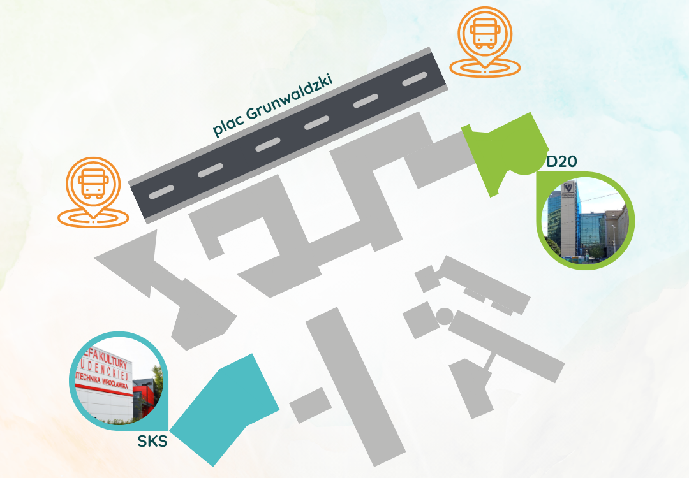

Mapka i najważniejsze informacje
Już dziś spotkamy się podczas konferencji OMatKo. Cieszymy się, że wreszcie będziemy mogli porozmawiać z Wami na żywo. Poniżej zamieszczamy najważniejsze informacje organizacyjne.
-
Rejestracja uczestników rozpocznie się o godzinie 13:30. Na konferencję zapraszamy do holu Centrum Kongresowego Politechniki Wrocławskiej (budynek D-20, ul. Janiszewskiego). Poniżej publikujemy mapkę, która ułatwi dotarcie na miejsce.
-
Wszystkie wykłady, prelekcje oraz przerwy kawowe będą odbywać się w budynku D-20.
-
Sobotnia integracja oraz obiad zaplanowane są w Strefie Kultury Studenckiej (budynek C-18, ul. Hoene-Wrońskiego 10).
Ponadto zapraszamy na dzisiejszą integrację, która odbędzie się w Barze Przekręt, ul. Curie-Skłodowskiej 1 Godzina rozpoczęcia: 20:30 Przedstawiciele organizatorów będą czekać na uczestników na miejscu.
Do zobaczenia na konferencji!
